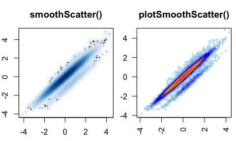
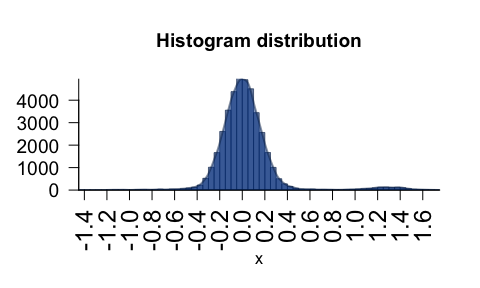
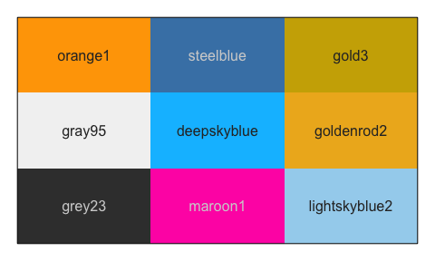
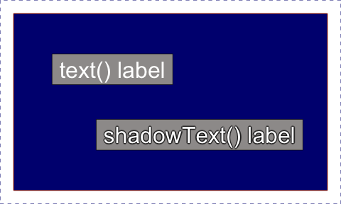
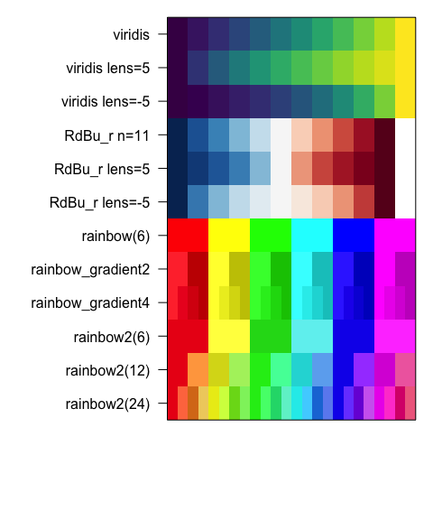

The goal of jamba is to provide useful custom functions for R data analysis and visualization.
A full online function reference is available via the pkgdown documentation:
Functions are categorized, some examples are listed below:
The R functions in jamba have been built up over several
years, often based upon and citing the relevant discussion from
Stackoverflow, R-help, or Bioconductor, along with the principal
author(s). Almost every function is some sort of wrapper around existing
R functions – designed for specific cases where I can make it faster,
more flexible, or customized to make my analysis life easier. Kudos and
thanks to the original authors! The R community is built upon the
collective greatness of its contributors!
Most of the functions are designed around workflows for Bioinformatics analyses, where functions need to be efficient when operating over 10,000 to 100,000 elements. (They work really well with millions as well.) Usually the speed gains are obvious with about 100 elements, then scale linearly (or worse) as the number increases. I and others use these functions all the time.
One example function writeOpenxlsx() is a simple wrapper
around very useful openxlsx::write.xlsx(). Also
writeOpenxlsx() applies column formatting for things like
P-values, fold changes, log2 fold changes, numeric and integer values –
and uses color-shading of cells for each type. So many hours saved from
hand-editing Excel formats!
Small and large efficiencies are used wherever possible. For example it is faster to operate on unique entries from a 100,000 element list, than it is to perform a function on the full list. In most cases, I have tested numerous available R methods and packages, and settled on the fastest* available at the time. If there is something faster or better, I would love for you to let me/us know!
The functions in jamba are intended to be convenient
wrappers around whatever series of steps it takes to get the job done.
My design goal is to “make my own analysis jobs easier” as first
priority.
Lastly, jamba should motivate me and others to create R
packages instead of a random collection of R functions in
*.R files.
mixedSort() - highly efficient alphanumeric sort, for
example chr1, chr2, chr3, chr10, etc.mixedSortDF() - as above, applied to columns in a
data.frame (or matrix, tibble,
DataFrame, etc.)mixedSorts() - as above, applied to a list of vectors
with no speed loss.Example:
| miRNA | sort_rank | mixedSort_rank | |
|---|---|---|---|
| 2 | ABCA2 | 2 | 1 |
| 1 | ABCA12 | 1 | 2 |
| 3 | miR-1 | 3 | 3 |
| 6 | miR-1a | 6 | 4 |
| 7 | miR-1b | 7 | 5 |
| 8 | miR-2 | 8 | 6 |
| 4 | miR-12 | 4 | 7 |
| 9 | miR-22 | 9 | 8 |
| 5 | miR-122 | 5 | 9 |
These functions help with base R plots, in all those little cases
when the amazing ggplot2 package is not a smooth fit.
nullPlot() - convenient “blank” base R plot, optionally
displays marginsplotSmoothScatter() - smooth scatter
plot() for point density, enhanced over
smoothScatter() 
plotPolygonDensity() - fast density/histogram plot for
vector or matrix 
imageDefault() - enhanced image() that
enables raster output with consistent pixel aspect ratio.imageByColors() - wrapper to image() for a
matrix or data.frame of colors, with optional labels 
minorLogTicksAxis() - log-transformed axis labels,
flexible log base, and option for properly adjusted
log2(1 + x) format.sqrtAxis() - draw a square-root transformed axis, with
proper labels.drawLabels() - draw square colorized text labelsshadowText() - replacement for text() that
draws shadows or outlines. 
groupedAxis() - grouped axis labels to show
regions/rangesdecideMfrow() - determine appropriate value for
par("mfrow") for multipanel output in base R plotting.getPlotAspect() - determine visible plot aspect
ratio.Every Bioinformatician/statistician needs to write data to Excel, the
writeOpenxlsx() function is consistent and makes it look
pretty. You can save numerous worksheets in a single Excel file, without
having to go back and custom-format everything.
writeOpenxlsx() - flexible Excel exporter, with
categorical and conditional colors.applyXlsxCategoricalFormat() - apply categorical colors
to ExcelapplyXlsxConditionalFormat() - apply conditional colors
to ExcelEverything I do uses color to the utmost limit, especially on R console, and in every R plot.
getColorRamp() - flexible to create or retrieve color
gradientswarpRamp() - “bend” a color gradient to enhance the
visual rangecolor2gradient() - convert a color to gradient of n
colors; or do the same for a vectormakeColorDarker() - adjust darkness and saturationshowColors() - display a vector or list of colorsfixYellow() - adjust the weird green-yellow, by
personal preferenceprintDebug() - pretty colorized text output using
crayon package. 
Cool methods to operate on super-long lists in one call, to avoid
looping through the list either with for() loops,
lapply() or map() functions.
cPaste() - highly efficient paste() over a
large list of vectorscPasteS() - as above but using mixedSort()
before paste().cPasteU() - as above but using uniques()
before paste().cPasteSU() - as above but using
mixedSort() and uniques() before
paste().uniques() - efficient unique() over a list
of vectorssclass() - runs class() on a listsdim(), ssdim() - dimensions of list
objects, or nested list of listsrbindList() - efficient
do.call(rbind, ...) to bind rows into a matrix or
data.frame, useful when following strsplit().mergeAllXY() - merge a list of data.frame
objectsrmNULL() - remove NULL or empty elements from a list,
with optional replacementWe use R names as an additional method to make sure everything is kept in the proper order. Many R functions return results using input names, so it helps to have a really solid naming strategy. For the R functions that remove names – I highly recommend adding them back yourself!
makeNames() - make unique names, using flexible
logicnameVector() - add names to a vector, using its own
value, or supplied namesnameVectorN() - make named vector using the names of a
vector (useful inside lapply()) or any function that
returns data using names of the input vector.pasteByRow() - fast, flexible row-paste with
delimiters, optionally remove blankspasteByRowOrdered() - as above but returns ordered
factor, using existing factor orders from each column when presentrowGroupMeans(), rowRmMadOutliers() -
efficient grouped row functionsmergeAllXY() - merge a list of data.frame
into onerenameColumn() - rename columns from and
to.kable_coloring() - flexible colorized
data.frame output in Rmarkdown.gsubOrdered() - gsub that returns ordered factor,
maintians the previous factor ordergrepls() - grep the environment (including attached
packages) for object namesvgrep(), vigrep() - value-grep
shortcutunvgrep(), unvigrep() - un-grep – remove
matched results from the output.provigrep() - progressive grep, searches each pattern
in order, returning results in that orderigrepHas() - rapid case-insensitive grep
presence/absense testucfirst() - upper-case the first letter of each
word.padString(), padInteger() - produce
strings from numeric values with consistent leading zeros.noiseFloor() - apply noise floor (and ceiling) with
flexible replacement valueswarpAroundZero() - warp a numeric vector symmetrically
around zerorowGroupMeans(), rowRmMadOutliers() -
efficient grouped row functionsdeg2rad(), rad2deg() - convert degrees to
radiansrmNA() - remove NA values, with optional
replacementrmInfinite() - remove infinite values, with optional
replacement.formatInt() - convenient format() for
integer output, with comma-delimiter by defaultjargs() - pretty function arguments, optional pattern
search argument name
jargs(plotSmoothScatter)
#> x = ,
#> y = NULL,
#> bandwidthN = 300,
#> transformation = function( x ) x^0.25,
#> xlim = NULL,
#> ylim = NULL,
#> nbin = 256,
#> nrpoints = 0,
#> colramp = c("white", "lightblue", "blue", "orange", "orangered2"),
#> doTest = FALSE,
#> fillBackground = TRUE,
#> naAction = c("remove", "floor0", "floor1"),
#> xaxt = "s",
#> yaxt = "s",
#> add = FALSE,
#> applyRangeCeiling = TRUE,
#> useRaster = TRUE,
#> verbose = FALSE,
#> ... =printDebug() - pretty colorized text output using
crayon package.setPrompt() - pretty colorized R console prompt with
project name and R versionnewestFile() - most recently modified file from a
vector of filesjamma – MA-plots (also known as “mean-variance”,
“Bland-Altman”, or “mean-difference” plots), relies upon
jamba::plotSmoothScatter(); centerGeneData()
to apply flexible row-centering with optional groups and control
samples; jammanorm() - normalize data based upon MA-plot
outputcolorjam – colorjam::rainbowJam() for
scalable categorical colors using alternating luminance and chroma
values.genejam – fast, consistent conversion of gene symbols
to the most current gene nomenclaturesplicejam – Sashimi plots for RNA-seq datamultienrichjam – multiple gene set enrichment analysis
and visualizationplatjam – platform technology functions, importers for
NanoString